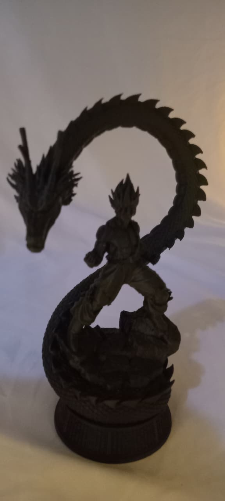

Miniatura do Goku Super Saiyajin 2 com Shenlong
Sobre o modelo
Este modelo representa o personagem Goku em sua forma Super Saiyajin 2, acompanhado do lendário dragão Shenlong, formando uma composição em arco que transmite força, movimento e imponência.
Material e como foi feito
Produzido em PLA de alta qualidade, com preenchimento interno de aproximadamente 15%, garantindo resistência e ótima definição. O processo inclui impressão 3D, lixamento e tratamento cuidadoso.
Para que serve
Ideal para decoração de estantes, setups e ambientes personalizados. Perfeito para colecionadores e fãs de Dragon Ball.
Falar no WhatsApp